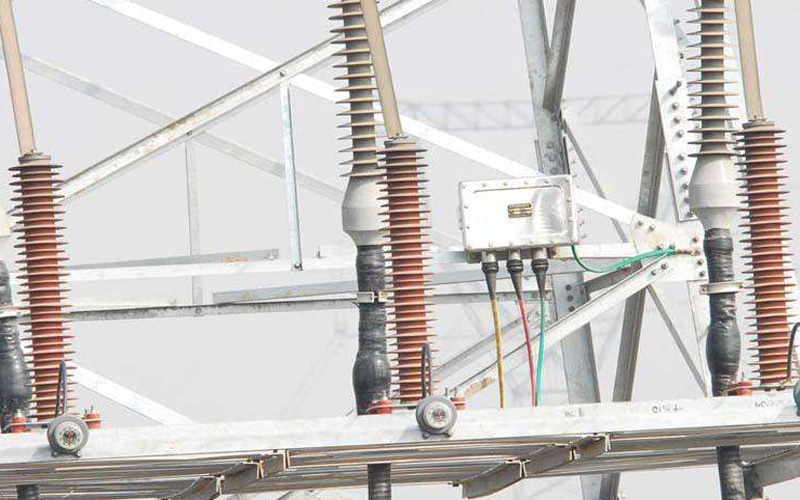

氧化锌避雷器在线监测系统
-

氧化锌避雷器
-
氧化锌避雷器
项目介绍
利用氧化锌避雷器底部泄漏电流的阻性成份判断其工作状况
- 系统简介
- 利用单片机研制了便携式氧化锌避雷器在线监测仪，实现了在线监测的目标。此智能化仪器用在变电站中，有利于发现氧化锌避雷器的故障隐患，提高电力系统供电质量，减少大面积停电事故造成的损失
- 技术环节
- 利用数字信号处理理论、计算机技术和传感器技术，对阻容性泄漏电流进行分析，将阻性电流成功地分离出来，从而可以及时准确观察氧化锌避雷器的工作状况的变化，及时采取有效的措施
- 项目说明
- 此研究成果在国内外是创新，至今没有同类研究成果出现，已应用于测量介质损耗角